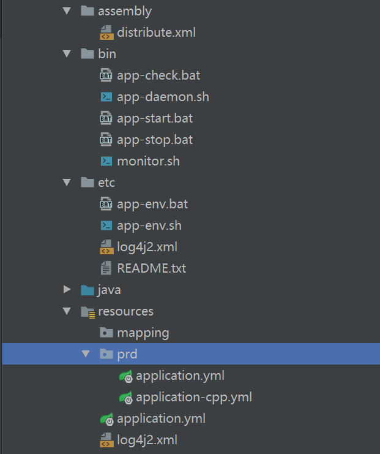

Spring Cloud Utility
maven
配置maven settings文件,profile定义下面三种
- dev
- sit
- prd
mvn clean compile -Dmaven.test.skip=true -Pdev/sit/prd
配置阿里云私有仓库https://repomanage.rdc.aliyun.com/my/repo
基础库
基础库
libeme.modules.*.*相关的JAR包都上传到此仓库了,示例
<dependency>
<groupId>libme.modules.xstream</groupId>
<artifactId>cpp-xstream-kernel</artifactId>
<version>${revision}</version>
</dependency>
revision:3.0.1
Config
Server定义检索优先级目录
一般情况下，我们对配置文件有如下的需求：- 一个全局配置，可以被所有的模块使用
- 一个全局配置，可以被某一个特定模块的不同环境使用
- 模块的特定环境配置
通过 spring.cloud.config.server.native.search-locations 或者 spring.cloud.config.server.git.search-paths 定义多个扫描目录（多个目录使用逗号','隔开），
Note:目录列表中，越在后面目录里面的配置信息有更高的优先级，覆盖其之前目录中的配置信息。示例
spring.cloud.config.server.native.search-locations : file:C:\java_\git\spring-modules\scc\scc-config-server\src\main\resources\config,
file:C:\java_\git\spring-modules\scc\scc-config-server\src\main\resources\config\{application}\{profile}
Client配置文件的检索
仅有一个配置文件
application name在spring cloud config中用来定位获取哪个配置文件，如果你的配置文件只有一个，不需要配置任何信息，
只要在config server文件检索目录中有相应的文件就可以了，比如
如果定义
spring.application.name : module-demo ,在config server的search目录中，有module-demo[-{profile}].yml文件就可以了。
多个配置文件
如果有多个配置文件，配置spring.cloud.config.name ,多个名字使用逗号隔开。比如
spring.cloud.config.name : application-cfg,application-cpp,application,application-extension,application-scc,module-demo
spring.application.name定义的值必须出现在最后。
Eureka出现UNKOWN的节点
eureka.client.healthcheck.enabled: true 必须配置到非bootstrap.yml文件中，否则节点的状态可能是UNKOWN。
OAuth2+Security
OAuth2 参与的角色- 用户（user）
- 客户端（client）
- 授权服务器（authorize server）
- 资源服务器（resource server）
Spring Security的认证流程，非OAuth2
- org.springframework.security.web.context.SecurityContextPersistenceFilter
- org.springframework.security.web.authentication.AbstractAuthenticationProcessingFilter
- org.springframework.security.web.authentication.UsernamePasswordAuthenticationFilter
- org.springframework.security.oauth2.client.filter.OAuth2ClientAuthenticationProcessingFilter
org.springframework.security.oauth2.client.OAuth2RestOperations 可以连接到authorize server获取认证信息
- org.springframework.security.oauth2.provider.client.ClientCredentialsTokenEndpointFilter
client_id ,client_secret参数出现在http请求中，
request.getParameter("client_id") request.getParameter("client_secret")
- org.springframework.security.authentication.AuthenticationManager
- org.springframework.security.oauth2.provider.authentication.OAuth2AuthenticationManager
OAuth2认证使用这个
- org.springframework.security.authentication.ProviderManager
普通认证使用这个
- org.springframework.security.oauth2.provider.authentication.OAuth2AuthenticationManager
- org.springframework.security.web.access.ExceptionTranslationFilter
- org.springframework.security.web.access.intercept.FilterSecurityInterceptor
OAuth2的认证经过两个流程
1. Spring Security 认证Client Id + Client Secret2. Endpoint(org.springframework.security.oauth2.provider.endpoint.AbstractEndpoint)认证不同的授权类型,password,authorization_code,client_credentials,implicit,refresh_token
- org.springframework.security.oauth2.provider.endpoint.TokenEndpoint(/oauth/token)
- org.springframework.security.oauth2.provider.endpoint.AuthorizationEndpoint(/oauth/authorize)
- org.springframework.security.oauth2.provider.password.ResourceOwnerPasswordTokenGranter
- org.springframework.security.oauth2.provider.refresh.RefreshTokenGranter
- org.springframework.security.oauth2.provider.code.AuthorizationCodeTokenGranter
- org.springframework.security.oauth2.provider.client.ClientCredentialsTokenGranter
- org.springframework.security.oauth2.provider.implicit.ImplicitTokenGranter
OAuth2 Client/Resource检测是否已认证的流程
这个类org.springframework.security.web.FilterChainProxy是非常关键的，其包装了所有的security filter(SecurityFilterChain)，
所有在HttpSecurity中配置的filter都会被包装到SecurityFilterChain中。
org.springframework.security.oauth2.provider.authentication.OAuth2AuthenticationProcessingFilter用于Resource中OAuth2的认证,OAuth2AuthenticationProcessingFilter
在org.springframework.security.oauth2.config.annotation.web.configurers.ResourceServerSecurityConfigurer中被初始化。OAuth2AuthenticationProcessingFilter会通过org.springframework.security.oauth2.provider.authentication.TokenExtractor（BearerTokenExtractor） 从HTTP请求头中获取Authentication信息
Authorization : Bearer eyJhbGc...
整个Filter的执行流程如下
- org.springframework.web.filter.CharacterEncodingFilter
- org.springframework.web.filter.HttpPutFormContentFilter
- org.springframework.web.filter.RequestContextFilter
- org.springframework.security.web.FilterChainProxy ... 这部分是应用程序自定义的Filter
- org.springframework.boot.actuate.metrics.web.servlet.WebMvcMetricsFilter
FilterChainProxy{Security Filter Chain} : SecurityContextPersistenceFilter -> OAuth2AuthenticationProcessingFilter -> ExceptionTranslationFilter -> FilterSecurityInterceptor
认证信息中断？
Relay a resource server downstream to other resource servers(让认证信息（Authorization头信息）从一个资源服务器传到下一个资源服务器中，避免认证信息中断)Zuul Gateway
Feign Call
org.springframework.cloud.security.oauth2.client.AccessTokenContextRelay 从SecurityContext中复制 ‘access token’ 到OAuth2ClientContext中，
所以这边的OAuth2ClientContext bean需要是session scope或者request scope，不能是singleton scope
Spring Condition Order : 第一梯队如下： 1.1. 扫描的Bean，包括直接扫描、自动配置中扫描、启用组件中扫描的Bean： 即扫描标注了 @Controller @Service @Repository @Component 的类 1.2. 直接的Java配置，即@SpringBootApplication直接覆盖的包下用@Bean注册的Bean 第二梯队如下： 2.1. 启用组件中的Java配置注册的Bean，即在@Enable...引入、而且使用@Bean注册的Bean 第三梯队如下： 3.1. 自动配置中的Java配置注册的Bean，即在自动配置中引入、而且使用@Bean注册的Bean
Standalone Sample
单体应用，不使用spring boot plugin下的部署方式
使用 Spring Boot Plugin : -> mvn clean package spring-boot:repackage -Pprd -Dmaven.test.skip=true
Structure

项目目录结构类似(如上)，你也可以下载目录示例app-tar-template-0.0.1-SNAPSHOT-bin.zip
Build
- 修改app-env.bat/app-env.sh中的APP_MAIN_CLASS、APP_MAIN_NAME为你的java main class
- mvn clean package -Dmaven.test.skip=true -Pprd 在target目录中生成一个tar包
Env
- 配置JAVA_HOME
- jar命令可以被使用 （windows环境会使用这个命令）
Deploy
- 解压缩tar包
- 修改etc目录中的相应的配置文件
(1).Windows: 修改app-env.bat文件中的 “APP_HOME” 变量指向你的运行时目录
(2).Linux: 修改app-env.sh文件中的 “APP_HOME” 变量指向你的运行时目录
app-start.bat启动程序，运行 app-stop.bat 停止程序；在Linux下，运行shell指令
app-daemon.sh start app启动程序，运行app-daemon.sh stop app停止程序。
在Windows上可能会出现“控制台窗口主程序”的进程，注意停止程序不能杀掉这个进程，需要手动杀掉的。